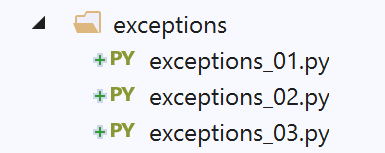

5. 例外情况
现在我们来关注例外情况。

5.1. 脚本 [exceptions_01]
第一个脚本说明了处理异常的必要性。
我们故意引发一个错误，以观察会发生什么（exceptions-01.py）：
第 4 行显示：
- 异常类型：ZeroDivisionError；
- 相关的错误信息：除以零。该信息为英文。这可能是我们希望更改的内容。
一条基本原则是：必须尽一切努力避免由 Python 解释器引发的异常。我们需要自行处理错误。
异常处理的语法如下：
try:
actions susceptibles de lancer une exception
except (Ex1, Ex2…) as ex:
actions de gestion de l'exception [ex]
except (Ex11, Ex12…) as ex:
actions de gestion de l'exception [ex]
finally:
actions toujours exécutées qu'il y ait exception ou non
在 try 块中，一旦发生异常（错误），执行将立即停止。此时，执行将转至其中一个 except 子句继续：
- 第3行：如果发生的异常[ex]属于元组(Ex1, Ex2…)类型或其派生类型，则执行第4行的操作；
- 第 5 行：如果该异常未被第 3 行捕获，且存在另一个 [except] 子句，则执行相同的流程。以此类推；
- 为了处理 [try] 中可能产生的各种异常类型，可以包含任意数量的 [except] 子句；
- 如果该异常未被任何 [except] 子句处理，则会回传至调用代码。若调用代码本身位于 try/except 结构中，则再次处理该异常；否则，异常将继续沿调用方法链向上回传。 最终，异常将到达 Python 解释器。解释器将终止正在执行的程序，并显示如前例所示的错误信息。因此，规则是主程序必须捕获所有可能从被调用方法向上传播的异常；
- 第 7 行：无论是否发生异常（except 块之后），[finally] 语句都会被执行。即使发生了异常但未被捕获，情况也是如此。 在这种情况下，[finally] 子句将在异常回传至调用方代码之前执行；
异常会携带有关已发生错误的信息。可通过以下语法获取这些信息：
except MyException as exception:
[exception] 是发生的异常。[exception.args] 表示该异常的参数元组。
要抛出异常，使用以下语法：
raise MyException(param1, param2…)
，其中 MyException 通常是 BaseException 类的派生类。 如果 [ex] 是被 [except] 子句捕获的异常，则传递给该类构造函数的参数将通过 [ex.args] 语法在异常捕获结构的 except 子句中可用。
以下脚本演示了这些概念。
5.2. 脚本 [exceptions_02]
以下脚本会显式处理错误：
# 异常处理
essai = 0
# 触发错误并进行处理
x = 2
try:
x = 4 / 0
except ZeroDivisionError as erreur:
# 错误是被拦截的异常
print(f"essai n° {essai} : {erreur}")
# x 的值未发生变化
print(f"x={x}")
# 重新开始
essai += 1
try:
x = 4 / 0
except BaseException as erreur:
# 捕获最通用的异常
# 错误是被捕获的异常
print(f"essai n° {essai} : {erreur}")
# 可以拦截不同类型的异常
# 执行在第一个能够处理该异常的[except]处停止
essai += 1
try:
x = 4 / 0
except ValueError as erreur:
# 此处未发生该异常
print(f"essai n° {essai} : {erreur}")
except BaseException as erreur:
# 捕获最通用的异常
print(f"essai n° {essai} : (Exception) {erreur}")
except ZeroDivisionError as erreur:
# 拦截到特定类型的异常
print(f"essai n° {essai} : (ZeroDivisionError) {erreur}")
# 重新尝试并更改顺序
essai += 1
try:
x = 4 / 0
except ValueError as erreur:
# 此处未发生该异常
print(f"essai n° {essai} : {erreur}")
except ZeroDivisionError as erreur:
# 捕获特定类型的异常
print(f"essai n° {essai} : (ZeroDivisionError) {erreur}")
except BaseException as erreur:
# 捕获最通用的异常
print(f"essai n° {essai} : (Exception) {erreur}")
# 一个无参数的except子句
essai += 1
try:
x = 4 / 0
except:
# 我们不关心异常的类型
print(f"essai n° {essai} : il y a eu un problème")
# 另一种类型的异常
essai += 1
try:
# x 无法转换为整数
x = int("x")
except ValueError as erreur:
# erreur 是被拦截的异常
print(f"essai n° {essai} : {erreur}")
# 异常通过元组携带信息，程序可访问该元组
essai += 1
try:
x = int("x")
except ValueError as erreur:
# 错误是被捕获的异常
print(f"essai n° {essai} : {erreur}, paramètres={erreur.args}")
# 可以抛出异常
essai += 1
try:
raise ValueError("param1", "param2", "param3")
except ValueError as erreur:
# 错误是被捕获的异常
print(f"essai n° {essai} : {erreur}, paramètres={erreur.args}")
# 可以创建自定义异常
# 它们必须继承自类 [BaseException]
class MyError(BaseException):
pass
# 抛出异常 MyError
essai += 1
try:
raise MyError("info1", "info2", "info3")
except MyError as erreur:
# 该错误是被拦截的异常
print(f"essai n° {essai} : {erreur}, paramètres={erreur.args}")
# 抛出异常 MyError 并附带错误消息
essai += 1
try:
raise MyError("mon msg d'erreur")
except MyError as erreur:
# 错误是被捕获的异常
print(f"essai n° {essai} : {erreur.args[0]}")
# finally 子句始终会被执行
# 无论是否发生异常
essai += 1
x = None
try:
x = 1
except:
# 异常
print(f"essai n° {essai} : exception")
finally:
# 在任何情况下都会执行
print(f"essai n° {essai} : finally x={x}")
essai += 1
x = None
try:
x = 2 / 0
except:
# 异常
print(f"essai n° {essai} : exception")
finally:
# 在任何情况下都会执行
print(f"essai n° {essai} : finally x={x}")
# 无需添加子句[except]
essai += 1
try:
# 会引发错误
x = 4 / 0
finally:
# 在所有情况下都会执行
print(f"essai n° {essai} : finally x={x}")
注：
- 第 4-12 行：处理除以零的情况；
- 第 8 行：捕获并显示发生的具体异常；
- 第 12 行：由于发生了异常，x 未在第 7 行接收值，因此其值未发生变化；
- 第14-21行：重复上述操作，但拦截更高层级的BaseException类型异常。 由于异常 ZeroDivisionError 继承自类 BaseException，因此 except 子句将捕获该异常；
- 第23-36行：设置多个except子句以处理多种异常类型。如果异常不匹配任何except子句，则仅执行一个except子句或不执行任何子句；
- 第38-50行：通过改变[except]子句的顺序，重复上述操作以展示该子句的作用；
- 第 52-58 行：except 子句可以不带任何参数。在这种情况下，它将终止所有异常；
- 第 60-67 行：引入异常 ValueError；
- 第 69-75 行：获取异常携带的信息；
- 第 77-83 行：介绍了如何抛出（raise）异常；
- 第 86-106 行：演示了专有异常类 MyError 的使用。 类 MyError 仅继承自基类 BaseException。它并未向基类添加任何内容。但现在，它可以在 except 子句中被显式指定；
- 第 108-130 行：演示了 finally 子类的用法；
- 第 132-139 行：这些行表明 [except] 子句并非必需；
屏幕输出结果如下：
5.3. 脚本 [exceptions_03]
此新脚本演示了异常在调用函数链中的上报：
# 一个自定义异常
class MyError(BaseException):
pass
# 三个函数
def f1(x: int) -> int:
# 不处理异常——它们会自动上报
return f2(x)
def f2(y: int) -> int:
# 不处理异常——它们会自动上报
return f3(y)
def f3(z: int) -> int:
if (z % 2) == 0:
# 如果 z 是偶数，则抛出异常
raise MyError("exception dans f3")
else:
return 2 * z
# ---------- main
# 异常沿调用方法链向上传递
# 直到某个方法将其拦截。此处将是 main
try:
print(f1(4))
except MyError as erreur:
print(f"type : {type(erreur)}, arguments : {erreur.args}")
# 另外三个函数会丰富其向上传递的异常
def f4(x: int) -> int:
try:
return f5(x)
except MyError as erreur:
# 对异常进行增强处理后重新抛出
raise MyError("exception dans f4", erreur)
def f5(y: int) -> int:
try:
return f6(y)
except MyError as erreur:
# 对异常进行增强处理后重新抛出
raise MyError("exception dans f5", erreur)
def f6(z: int) -> int:
if (z % 2) == 0:
# 如果 z 是偶数，则抛出异常
raise MyError("exception dans f6")
else:
return 2 * z
# ---------- main
try:
print(f4(4))
except MyError as erreur:
# 显示异常
print(f"type : {type(erreur)}, arguments : {erreur.args}")
# 可以回溯异常堆栈
err = erreur
# 显示错误信息
print(err.args[0])
# 异常是否被封装？
while len(err.args) == 2 and isinstance(err.args[1], BaseException):
# 异常转换
err = err.args[1]
# 第一个参数是错误消息
print(err.args[0])
注：
- 第 25-32 行，在 main --> f1 --> f2 --> f3（第 30 行）的调用过程中，由 f3 抛出的异常 MyError 将向上传播至 main。 随后将由第31行的except子程序处理；
- 第61-75行：在main → f4 → f5 → f6的调用链中（第62行），由f6抛出的异常MyError将向上传播至main。 随后该异常将由第63行的except子程序处理。此时，在沿调用链向上传播的过程中，向上传播的MyError异常本身又被封装在另一个异常中；
- 第 66-75 行：展示了如何向上追踪异常堆栈；
- 第 71 行：如果对象 [instance] 的类型为 [Classe] 或其派生类型，则函数 [isinstance(instance, Classe)] 返回 True。 此处我们使用了最高级别的异常 [BaseException]，以确保捕获所有异常；
屏幕输出结果如下：